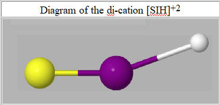

PM6-ORG is a variant of PM6 that has been optimized for use in organic chemistry, see A semiempirical method optimized for modeling proteins and Supplementary material. It provides increased accuracy in three areas of organic chemistry: heats of formation, non-covalent interactions, and protein geometries.
Several faults in other semiempirical methods, PM6, PM6-D3H4, PM7, etc., had limited their ability to model protein-ligand interactions. These faults were corrected in PM6-ORG.
Although PM6-ORG represented a large improvement over earlier methods, a severe fault was found almost two years after it was published. Specifically some systems that contained a sulfur atom in close proximity to an iodine atom gave nonsensical results. A small system that illustrates this fault is the triatomic [SIH]+2. When this system was run using PM6-ORG, the heat of formation was -337.5 kcal.mol-1, and the "d" population of the iodine atom was 9.5 electrons, resulting in a net partial atomic charge on iodine of -2.56.
To correct this fault, the parameters for iodine were re-optimized and a bias was added to the Udd parameter of iodine to increase its value. This resulted in the heat of formation of [SIH]+2 rising to +514.04 kcal.mol-1 and the "d" population of iodine decreasing to 0.14 electrons.
With the new parameters, the Average Unsigned Errors decreased slightly as shown in the following Table:
|
Table of Average Unsigned Errors |
||||
| Property | Quantity | Original AUE | Revised AUE | No. in set |
| DHf | Kcal/mol | 2.10 | 1.89 | 48 |
| Dipole | Debye | 0.23 | 0.15 | 7 |
| I.P. | eV | 0.20 | 0.19 | 12 |
| Bond length | Angstroms | 0.027 | 0.027 | 24 |
| Bond angle | Degrees | 1.23 | 0.86 | 9 |
By default, the revised parameters for iodine will be used in all copies of MOPAC after version 23.1.2. These parameters will not affect any systems that do not contain at least one iodine atom. An option to reverse the parameter values to those in the PM6-ORG publication has been provided. To use this option, add the keyword EXTERNAL="Old iodine parameters.txt" and have the file "Old iodine parameters.txt" in the same folder. If this option is used, the results for all systems will continue to be identical to those in the original paper.